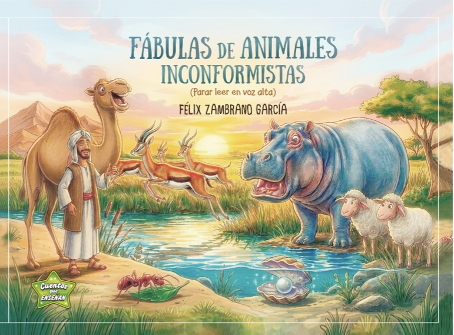
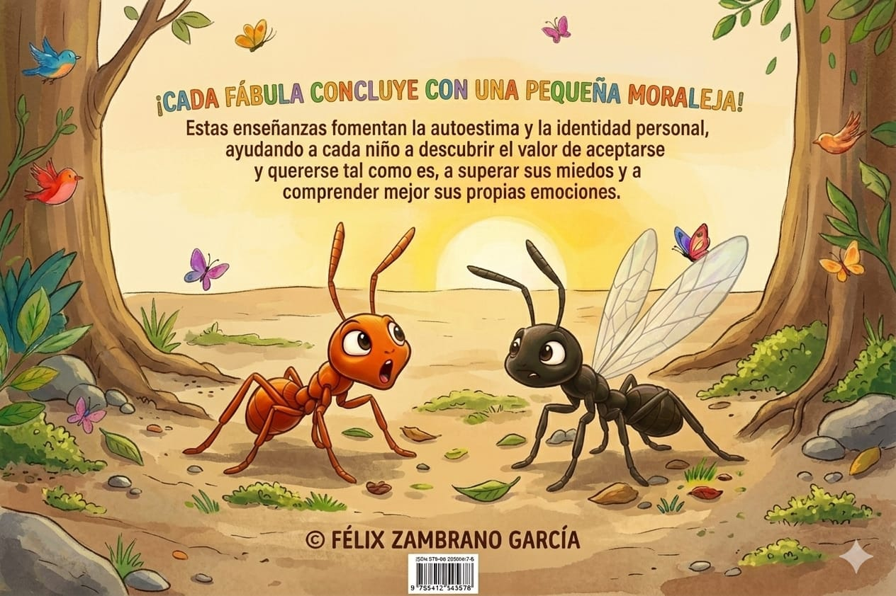
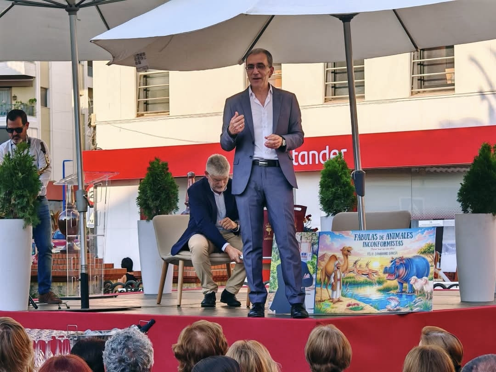
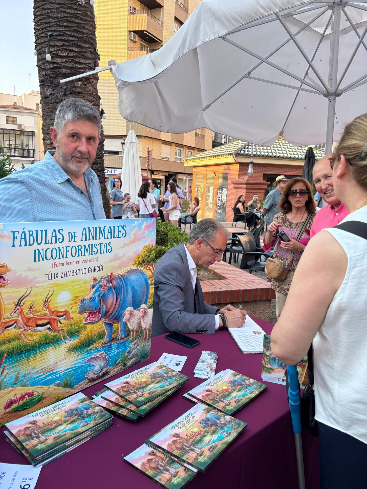

Sesión narrativa
Comparto entre 45 y 60 minutos de narración participativa.
Literatura infantil que cobra vida
Transformo Fábulas de animales inconformistas en sesiones participativas para colegios, donde invito al alumnado a escuchar, imaginar y formar parte de la historia.

Sesiones adaptadas desde infantil 5 años hasta 3º de primaria
Sobre el autor
Soy natural de Almendralejo, maestro especialista en Educación Infantil e inglés y cuentacuentos
Fui Director del CEIP Antonio Machado de Almendralejo durante 31 años. He trabajado en la docencia durante casi 40 años.
Me apasiona la Literatura Infantil y, especialmente, la obra del célebre autor Roald Dahl. He colaborado con revistas locales, como Ventana Literaria, y he prologado varios libros.
Durante 19 años fui Director de la Revista “Cuadernos de Tiza” del CEIP Antonio Machado de Almendralejo.
En febrero de 2026 fui ganador del V Certamen Nacional de Cartas de Amor de la Asociación “El Romeral Vivo” (El Romeral-Toledo).
En mayo de 2026 publiqué mi primer libro, Fábulas de animales inconformistas, presentado en la Feria del Libro de Almendralejo.
Actualmente estoy adscrito a los Encuentros de Autores Extremeños a través del Centro de Profesores y Recursos de Almendralejo, dentro del Plan de Fomento de la Lectura y Aulas Literarias.
Una experiencia para participar
Fábulas adaptadas a alumnos con Necesidades Específicas de Apoyo Educativo: TEA, TDAH, ALTAS CAPACIDADES, etc.



Comparto entre 45 y 60 minutos de narración participativa.
Trabajo con el alumnado mediante una ficha de comprensión que facilito para la actividad.
Adapto el formato a las edades, los grupos y los horarios de cada centro.
Otoño Literario · Almendralejo
· Biblioteca Municipal de Almendralejo
Ilusión y fantasía
La literatura infantil volvió a llenar de ilusión y fantasía la Biblioteca Municipal de Almendralejo con la presencia del escritor Félix Zambrano, protagonista de una nueva actividad del programa Otoño Literario.
La sala infantil de la biblioteca se quedó completamente llena para recibir al autor de Fábulas de Animales Inconformistas, en una tarde en la que varias decenas de niños disfrutaron de un divertido y participativo cuentacuentos basado en su obra.
A través de sus personajes y sus historias, Zambrano consiguió transportar a los más pequeños a un mundo de imaginación, aventuras y animales con personalidad propia, demostrando que la literatura puede ser también un espacio para jugar, descubrir y hacerse preguntas.
La actividad permitió acercar el libro y al propio autor a los niños de una manera cercana y entretenida, fomentando el gusto por la lectura desde edades tempranas y convirtiendo la biblioteca en un lugar de encuentro, participación y diversión.
La respuesta del público fue una de las mejores imágenes de la jornada: una sala infantil repleta, decenas de niños atentos a cada historia y la magia de la lectura compartida.
Con actividades como esta, el Otoño Literario continúa llevando la cultura y los libros a todos los públicos, con especial atención a los más pequeños.
Porque cuando una biblioteca se llena de niños, también se llena de imaginación, historias y futuro.
Agenda confirmada
Comparto aquí las visitas que ya están confirmadas.
Para colegios
Selecciona una fecha preferida y completa la solicitud para tu centro. Revisaré personalmente los datos y te contactaré para confirmar los detalles.
La fecha seleccionada es una preferencia. Félix confirmará posteriormente su disponibilidad.
Contacto alternativo
Si lo prefieres, puedes escribirme o llamarme directamente para comentar la visita de tu centro.
fezamgar2020@gmail.com
+34 637 58 05 90
Normalmente respondo en un plazo de 24–48 horas laborables.